5.6 MetaCell2 metacells
We load the object obtained with MCAT
cd34.metacell <- readRDS("data/CD34/MC2/mc_Seurat.rds")
cd34.metacell
#> An object of class Seurat
#> 12462 features across 140 samples within 1 assay
#> Active assay: RNA (12462 features, 0 variable features)We Normalize the metacells data, identify the HVGs, and we make a classical dimensionality reduction (first a PCA and then vizualisation with a UMAP).
cd34.metacell <- NormalizeData(cd34.metacell)
cd34.metacell <- FindVariableFeatures(cd34.metacell)
cd34.metacell <- ScaleData(cd34.metacell)
#> Centering and scaling data matrix
cd34.metacell <- RunPCA(cd34.metacell)
#> PC_ 1
#> Positive: NUP210, MIS18BP1, LCP1, IQGAP1, P4HB, SLC2A4RG, COLGALT1, GRB2, ARHGEF18, BRI3BP
#> RBL1, AGTPBP1, GGA2, TTC7A, PTPRE, IL17RA, CLEC12A, SLC4A7, CEP128, ARHGAP26
#> LINC01572, UVRAG, LCORL, LRP8, MAP3K1, PDE3B, UBE2E2, GEN1, NSD2, SND1
#> Negative: RPL34, MEIS1, NKAIN2, CHRM3, LAPTM4B, RPL11, ANGPT1, PRKG1, INPP4B, NRIP1
#> RPS2, PDZD2, CRHBP, GPC5, NPR3, PRKG2, ITGA9, CASC15, BEX2, ST8SIA6
#> YES1, DAPK1, ITGA9-AS1, MSI2, MED12L, NFATC2, HMGA2, RPS18, SLC8A3, CHRM3-AS2
#> PC_ 2
#> Positive: TFR2, GATA1, UROD, KLF1, DNPH1, ANK1, TIMM13, PRDX2, XACT, ADAMTS3
#> MYC, EPOR, RYR3, TMEM14C, PLIN2, CNRIP1, KEL, CSF1, PTH2R, CYTOR
#> MPST, P2RX5, SPTBN2, ELOVL6, SLC40A1, CXADR, SLC39A3, ZFPM1, NMNAT3, FADS2
#> Negative: AKAP13, VIM, CD74, PRKCB, STK17B, CYTH1, HLA-DQB1, DOCK10, SBF2, RASSF2
#> PRKCE, TSC22D3, PLCB1, CD44, ANKRD44, DST, HDAC9, PDE4B, HLA-DRA, TCF4
#> CALCRL, IDS, TGFBR2, SLCO3A1, POU2F2, AKNA, NEGR1, YPEL5, FYN, COL24A1
#> PC_ 3
#> Positive: MYL12A, CARD11, PLP2, CCDC69, LGMN, CTSB, CST3, ARL4C, LIME1, PCED1B
#> CYTH4, CDKN2D, IQSEC1, RNASE6, IGFLR1, CYB561A3, NCF1, PCED1B-AS1, SPIB, FAM160A1
#> CCDC50, MPEG1, RUBCNL, CYBB, GABARAP, LY96, UGCG, TGFBI, IGF2R, HLA-DMA
#> Negative: ANKRD28, LRMDA, EREG, SNHG25, IRAK3, FNDC3B, PCBP3, CSF3R, RAB44, AZU1
#> GPI, MTUS2, SLC22A15, SLC22A4, DENND3, ATP8B4, ELANE, ERLIN1, MARC1, TENT5A
#> SLC36A4, DSTYK, IL1RAP, RFX8, MS4A3, MFSD10, PKP2, CEP170, RAB27A, HGF
#> PC_ 4
#> Positive: EVI5, TET2, CPQ, FCGRT, SRGN, DENND4A, THEMIS2, RNH1, SUCLG2, PIP5K1B
#> NR4A2, S100A6, FAM102B, CD4, FGD4, EMP3, CPPED1, EHBP1L1, NID1, AOAH
#> ARHGEF12, PHTF1, GRASP, ZNF385A, PRKCA, RIPOR3, PRKAR2B, SAT1, CHD7, KCNQ1
#> Negative: SMIM24, IGLL1, PHGDH, SPARC, LGALS3BP, ITM2C, MZB1, CD69, IGFBP7, SPINK2
#> LAT2, TMIGD2, C1QTNF4, RPLP1, DOCK1, GYPC, ARMH1, CDK6, ADA, SDK2
#> FLT3, PIK3R1, BAALC, PLCB1, SATB1, LRRC26, ARHGAP25, CYFIP2, LNCAROD, PROM1
#> PC_ 5
#> Positive: CIT, C21orf58, NUF2, KIF15, SPC25, DIAPH3, SMC4, NDC80, CDCA5, RRM2
#> ESCO2, CDC25C, DEPDC1B, RTKN2, HIST1H4C, MELK, MFGE8, SKA3, KIF20B, NUSAP1
#> NCAPG, ESPL1, EXO1, TACC3, RRM1, NCAPG2, PLK4, E2F8, KIF11, CDK1
#> Negative: SOX4, ACTG1, MIR181A1HG, LINC00173, MED13L, IGFBP7, IL2RG, HCST, SLC43A2, SATB1
#> ABHD17B, ARPP21, TMSB10, TRPM2, LAT2, DNTT, SLC45A3, MYO1G, S100Z, SMAD7
#> REEP5, RPLP1, LINC01934, TNFRSF21, RBMS3, WDR66, MZB1, COBL, CDK6, MOB1B
cd34.metacell <- RunUMAP(cd34.metacell,dims = c(1:50),min.dist = 0.5)
#> Warning: The default method for RunUMAP has changed from calling Python UMAP via reticulate to the R-native UWOT using the cosine metric
#> To use Python UMAP via reticulate, set umap.method to 'umap-learn' and metric to 'correlation'
#> This message will be shown once per session
#> 12:15:01 UMAP embedding parameters a = 0.583 b = 1.334
#> 12:15:01 Read 140 rows and found 50 numeric columns
#> 12:15:01 Using Annoy for neighbor search, n_neighbors = 30
#> 12:15:01 Building Annoy index with metric = cosine, n_trees = 50
#> 0% 10 20 30 40 50 60 70 80 90 100%
#> [----|----|----|----|----|----|----|----|----|----|
#> **************************************************|
#> 12:15:01 Writing NN index file to temp file /tmp/35395114/RtmptFIlEg/file14f2012276370f
#> 12:15:01 Searching Annoy index using 1 thread, search_k = 3000
#> 12:15:01 Annoy recall = 100%
#> 12:15:02 Commencing smooth kNN distance calibration using 1 thread with target n_neighbors = 30
#> 12:15:02 Initializing from normalized Laplacian + noise (using irlba)
#> 12:15:02 Commencing optimization for 500 epochs, with 4956 positive edges
#> 12:15:02 Optimization finishedPlot the results using Seurat.
umap.metacell <- UMAPPlot(cd34.metacell,group.by = "celltype",label = T)
umap.metacell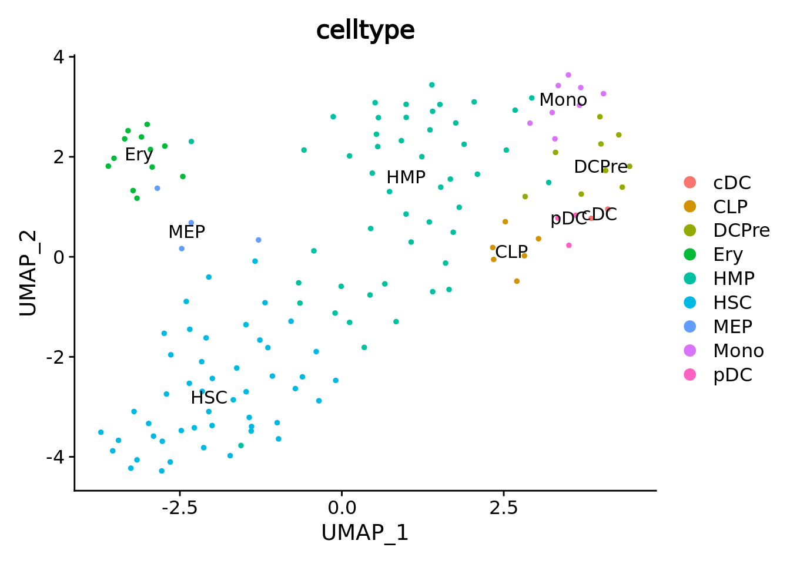
We correctly retrieve the two main differentiation path of CD34+ cells. In one hand, Megakaryocyte Erythrocyte Progenitor (MEP) fate with GATA2 and then GATA1 transcription factor expression. On the other, Lymphoid Myeloid Multipotent Progenitor (LMPP) fate with SPI1 transcription factor expression.
genes <- c("CD34","GATA2","GATA1","SPI1")
marker.metacell.umaps <- lapply(genes, FUN = function(x){
plot <- FeaturePlot(cd34.metacell, features = x)
}
)
marker.metacell.umaps
#> [[1]]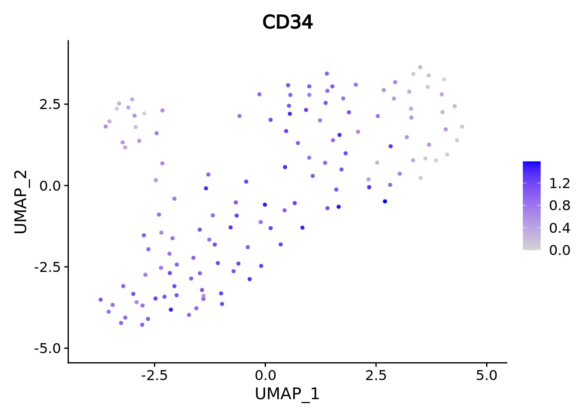
#>
#> [[2]]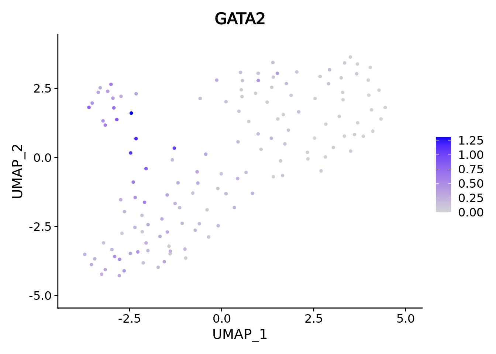
#>
#> [[3]]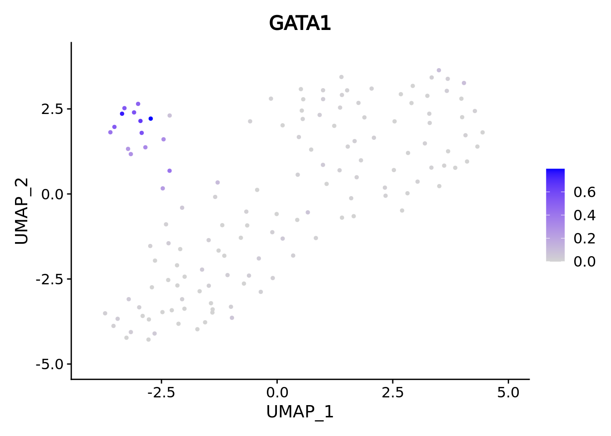
#>
#> [[4]]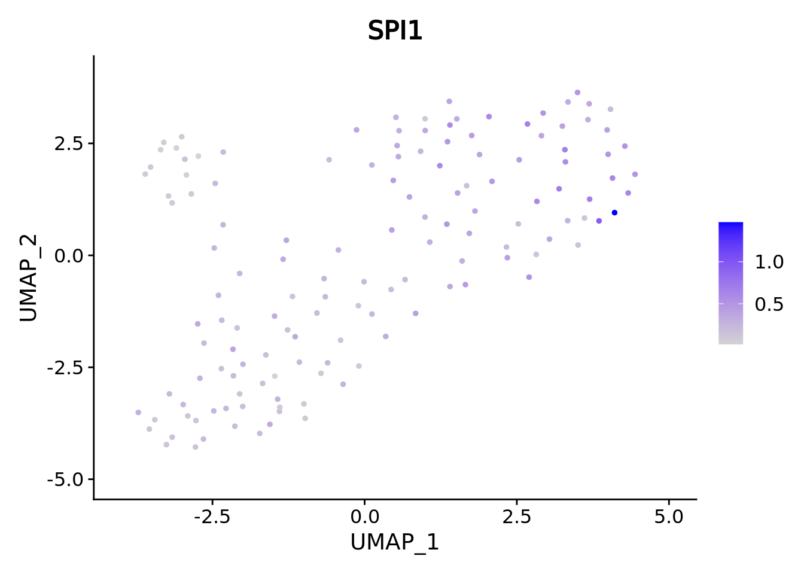 When analyzing metacells it’s a good idea to plot their size on these. We can do it with ggplot.
data <- cbind(umap.metacell$data, cd34.metacell$size)
colnames(data)[length(colnames(data))] <- "size"
ggplot(data,aes(x= UMAP_1,y=UMAP_2,color = celltype)) + geom_point(aes(size=size)) + theme_classic()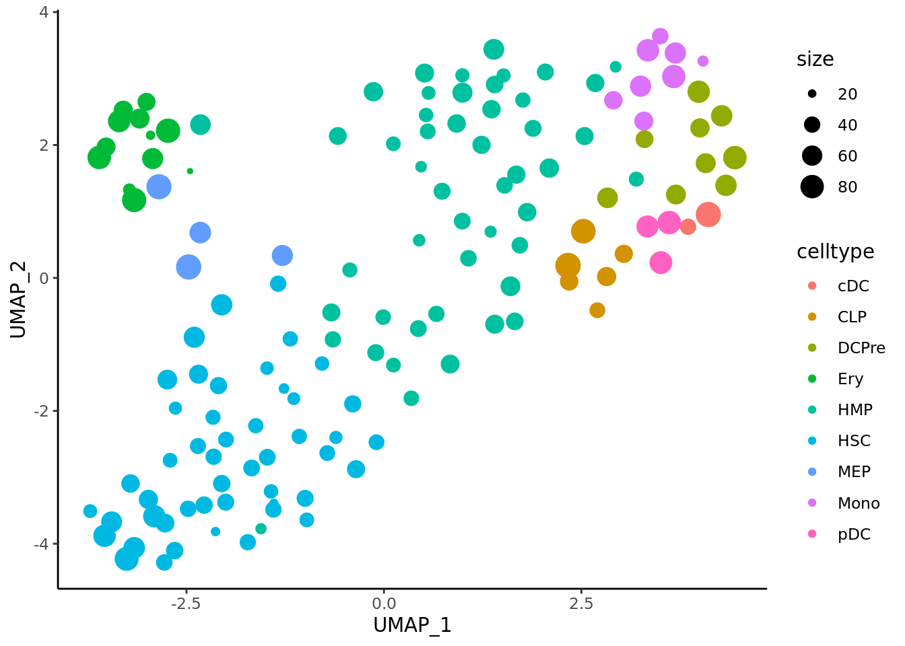
lapply(marker.metacell.umaps,FUN = function(x){
data <- cbind(x$data,cd34.metacell$size)
colnames(data)[length(colnames(data))] <- "size"
gene <- colnames(data)[length(colnames(data))-1]
ggplot(data,aes(x= UMAP_1,y=UMAP_2,size=size,colour = .data[[gene]])) + geom_point() +
scale_color_gradientn(colors = c("lightgrey", "blue"),
guide = "colorbar") +
theme_classic() + ggtitle(gene)
} )
#> [[1]]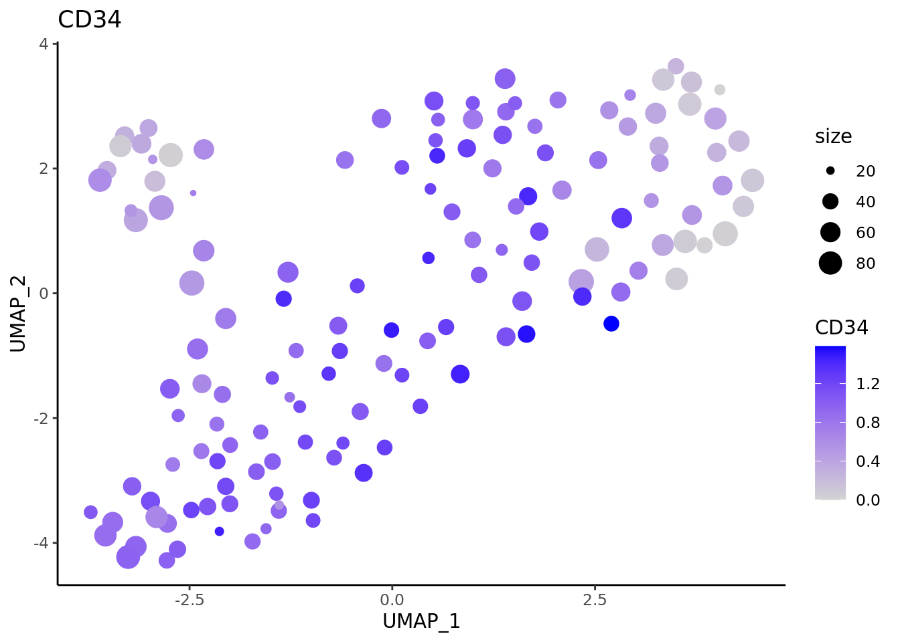
#>
#> [[2]]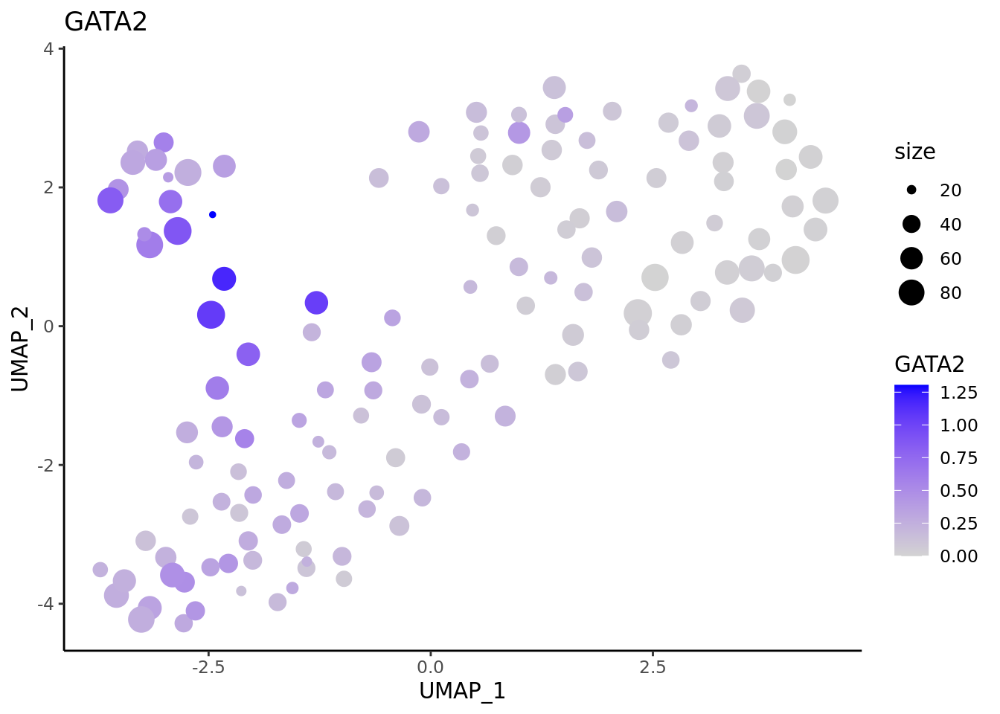
#>
#> [[3]]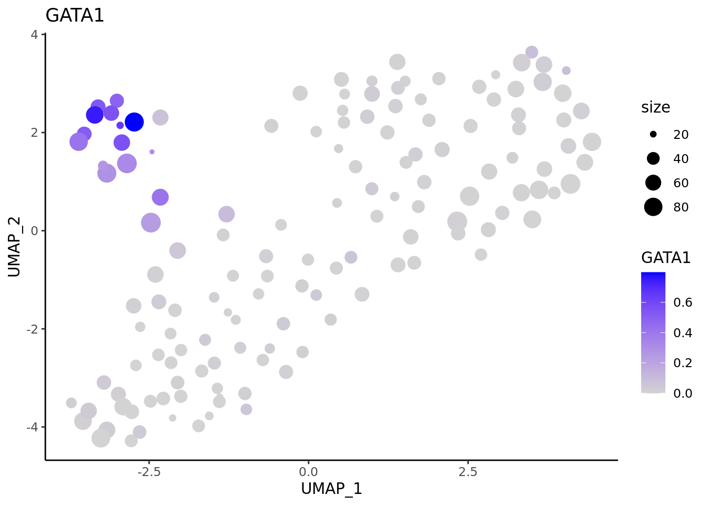
#>
#> [[4]]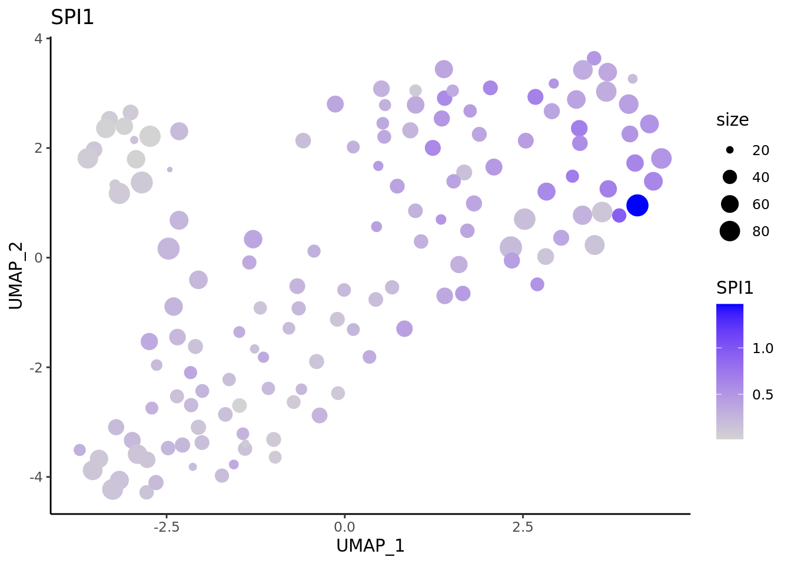 ## SuperCell metacells
We can do the same with the metacells obtained with SuperCell
We load the object obtained with MCAT
cd34.supercell <- readRDS("data/CD34/SuperCell/mc_Seurat.rds")
cd34.supercell
#> An object of class Seurat
#> 12464 features across 138 samples within 1 assay
#> Active assay: RNA (12464 features, 0 variable features)We Normalize the supercells data, identify the HVGs, and we make a classical dimensionality reduction (first a PCA and then vizualisation with a UMAP).
cd34.supercell <- NormalizeData(cd34.supercell)
cd34.supercell <- FindVariableFeatures(cd34.supercell)
cd34.supercell <- ScaleData(cd34.supercell)
#> Centering and scaling data matrix
cd34.supercell <- RunPCA(cd34.supercell)
#> PC_ 1
#> Positive: TST, NECTIN1, PCLAF, BLVRB, CD36, S100A6, CCDC26, PPP1R14A, PMP22, ANK1
#> ECE1, KLF1, KEL, PLIN2, KCNH2, ADAMTS3, EPOR, CKS1B, HBD, CSF1
#> PRKAR2B, HES6, GATA1, H2AFX, CXADR, APOC1, CENPM, TFR2, APOE, CSF2RB
#> Negative: PRKCH, MIR99AHG, RBPMS, CD109, LINC01122, CRHBP, FAM169A, SCML4, ADGRG6, GUCY1A1
#> ABLIM1, NRIP1, MEIS1, SGCZ, NBEA, TMEM163, RORA, MAGI2, PRDM16, ROBO4
#> FGD5, RABGAP1, RNF220, L3MBTL4, ITGA9, SPTBN1, PTPRM, PROM1, MPPED2, IL12RB2
#> PC_ 2
#> Positive: PRKCE, GAS7, SPNS3, HDAC9, AFF3, CRYBG1, CYTH1, NEGR1, RUNX2, LRRFIP1
#> MAP3K8, PDE4B, RASGEF1B, RAB11FIP1, FLT3, PRAG1, FAM107B, ITGAL, TIMP2, SDK2
#> HLA-DMB, PLD4, IRF8, APP, LGALS1, AHNAK, ARL4C, PAG1, ZFP36, TSPOAP1
#> Negative: STON2, TAL1, ZNF385D, MYH10, ALDH1A1, VPS37B, CDC42BPA, SLC40A1, DNAJC6, ST8SIA6
#> CYTL1, UROD, PHTF1, TNIK, ABO, NFIA, PIP5K1B, PDZD2, SORBS1, ZNF385D-AS2
#> TRIM58, ICAM4, XACT, ZFPM1, GATA1, HNRNPLL, ARHGEF12, TFR2, RYR3, MINPP1
#> PC_ 3
#> Positive: EXT1, RGS1, CARD11, MAPRE2, P2RY14, TMEM59, LGMN, JCHAIN, CCND3, SETBP1
#> CYTH4, CD37, IGF2R, ITM2B, HLA-DMA, ADAM19, LIME1, IL18R1, PMEPA1, HLA-DRA
#> UGCG, HLA-DPA1, RASD1, LINC01226, SLC9A7, CDKN2D, HLA-DPB1, SPIB, FAM160A1, TSBP1
#> Negative: FNDC3B, RAB44, SLC22A4, AZU1, PLPPR3, RFX8, PLD1, RAB27A, LRMDA, ELANE
#> PCBP3, HGF, CST7, NT5DC3, C16orf74, CTSG, MTUS2, SLC22A15, YBX3, CFD
#> MPO, IL1RAP, MS4A3, SLC1A3, AFF2, PRTN3, LYST, NR6A1, IGFBP2, CSF3R
#> PC_ 4
#> Positive: IGLL1, PHGDH, LGALS3BP, TSPAN7, SMIM24, PTPRD, NDC80, SKA3, MXD3, BAALC
#> SPC25, SPARC, CDKN3, FANCD2, KIF2C, FBXO43, ESCO2, RAD51AP1, CDCA5, CDK1
#> PRDX1, ARHGAP11B, ITGA6, DEPDC1B, MYLK, BAALC-AS1, TPX2, MREG, MYO5C, SPC24
#> Negative: KCNQ1, OSCAR, GRASP, ADAM8, ADAP1, FCGRT, FGD4, KDM7A, CTSH, CD86
#> NR4A2, CD4, ENTPD1, LYZ, VDR, NAMPT, HCK, CSTA, ITGAX, PER1
#> GABARAPL1, MNDA, FAM102B, CFP, ZNF503, TNFAIP2, PPARD, LRP1, NLRP12, RETN
#> PC_ 5
#> Positive: DNTT, LINC00426, GABPB1-AS1, SCN3A, VPREB1, LTB, LINC01237, ARPP21, MME, PCAT14
#> CD79A, CD96, ERGIC1, CYGB, IL7R, EBF1, LINC00173, CD79B, LINC01934, UMODL1
#> SCAI, ATP1A3, LGALS3BP, C5orf56, RETREG1, SLC43A2, SIDT1, LINC01375, SPON1, COBL
#> Negative: AURKB, TOP2A, DEPDC1B, UBE2C, CDCA3, CKAP2L, ASPM, NUSAP1, KIF4A, KIF14
#> KIFC1, PRC1, GTSE1, CIT, KIF18B, NUF2, CDK1, KIF15, KIF11, FOXM1
#> BIRC5, CCNA2, CDC25C, MKI67, TUBB4B, CDCA8, TPX2, CENPE, KIF23, CDCA2
cd34.supercell <- RunUMAP(cd34.supercell,dims = c(1:50),min.dist = 0.5)
#> 12:15:08 UMAP embedding parameters a = 0.583 b = 1.334
#> 12:15:08 Read 138 rows and found 50 numeric columns
#> 12:15:08 Using Annoy for neighbor search, n_neighbors = 30
#> 12:15:08 Building Annoy index with metric = cosine, n_trees = 50
#> 0% 10 20 30 40 50 60 70 80 90 100%
#> [----|----|----|----|----|----|----|----|----|----|
#> **************************************************|
#> 12:15:08 Writing NN index file to temp file /tmp/35395114/RtmptFIlEg/file14f20112bb73de
#> 12:15:08 Searching Annoy index using 1 thread, search_k = 3000
#> 12:15:08 Annoy recall = 100%
#> 12:15:08 Commencing smooth kNN distance calibration using 1 thread with target n_neighbors = 30
#> 12:15:08 Initializing from normalized Laplacian + noise (using irlba)
#> 12:15:08 Commencing optimization for 500 epochs, with 4504 positive edges
#> 12:15:09 Optimization finishedPlot the results using Seurat.
umap.supercell <- UMAPPlot(cd34.supercell,group.by = "celltype",label = T)
umap.supercell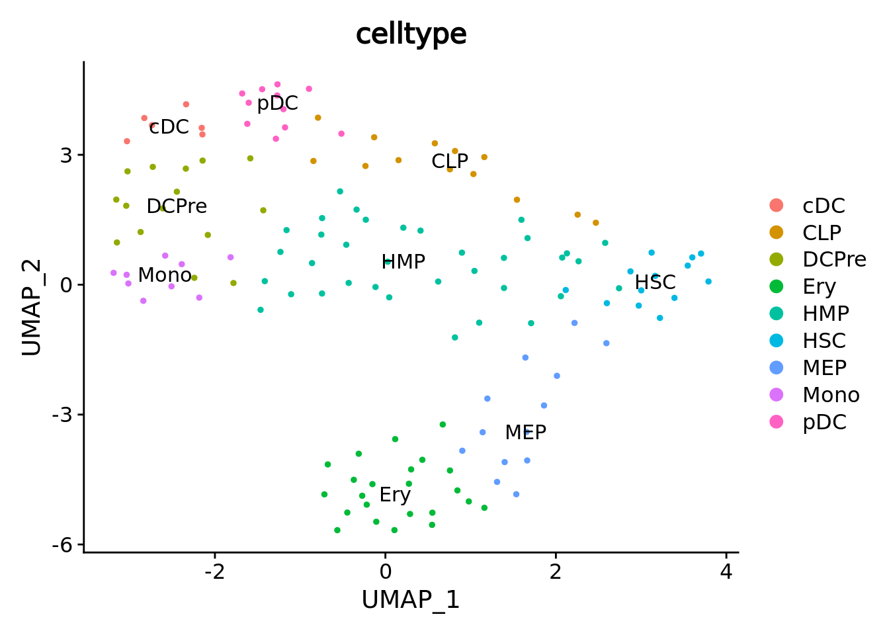 We correctly retrieve the two main differentiation path of CD34+ cells. In one hand, Megakaryocyte Erythrocyte Progenitor (MEP) fate with GATA2 and then GATA1 transcription factor expression. On the other, Lymphoid Myeloid Multipotent Progenitor (LMPP) fate with SPI1 transcription factor expression.
genes <- c("CD34","GATA2","GATA1","SPI1")
marker.supercell.umaps <- lapply(genes, FUN = function(x){
plot <- FeaturePlot(cd34.supercell, features = x)
}
)
marker.supercell.umaps
#> [[1]]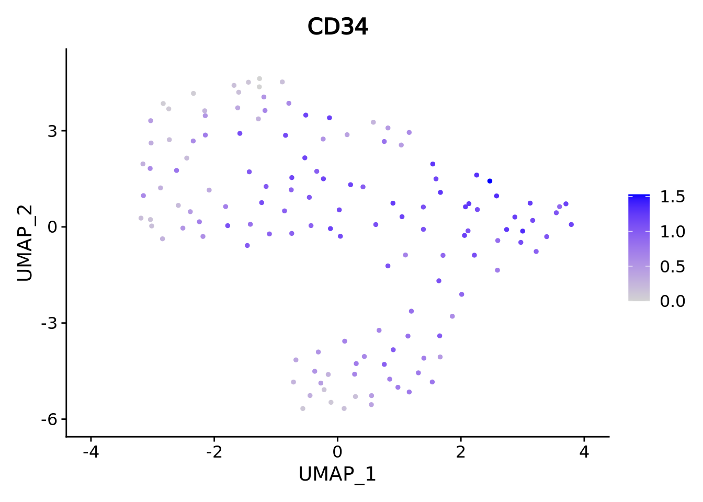
#>
#> [[2]]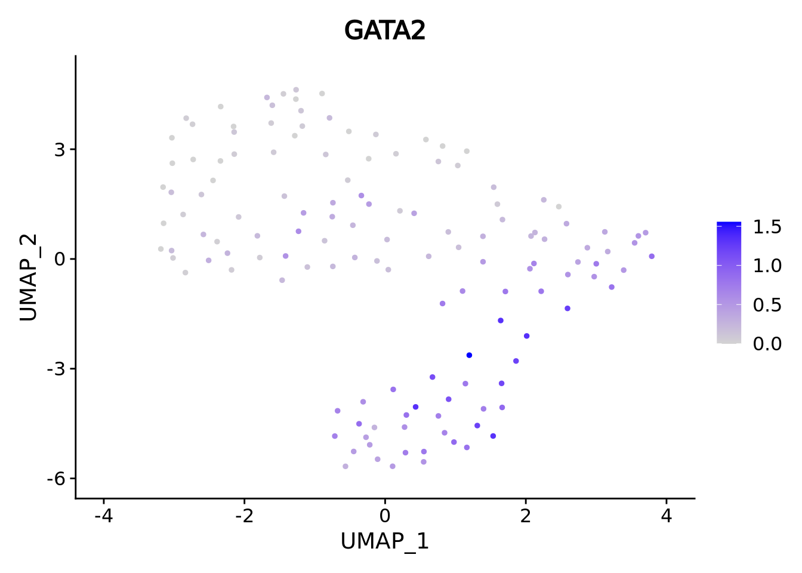
#>
#> [[3]]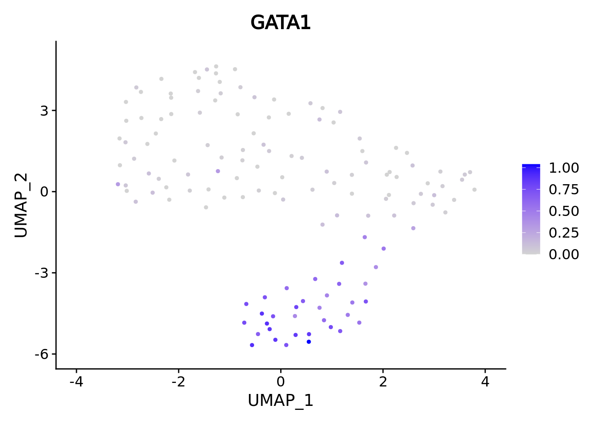
#>
#> [[4]]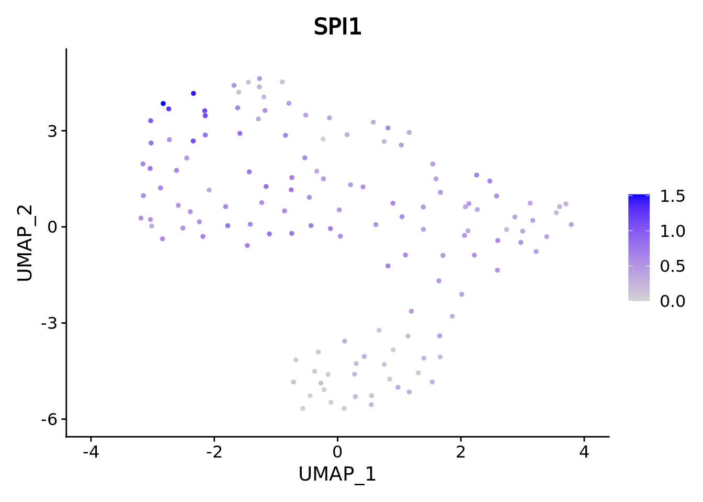 When analyzing supercells it’s a good idea to plot their size on these. We can do it with ggplot.
data <- cbind(umap.supercell$data,cd34.supercell$size)
colnames(data)[length(colnames(data))] <- "size"
ggplot(data,aes(x= UMAP_1,y=UMAP_2,color = celltype)) + geom_point(aes(size=size)) + theme_classic()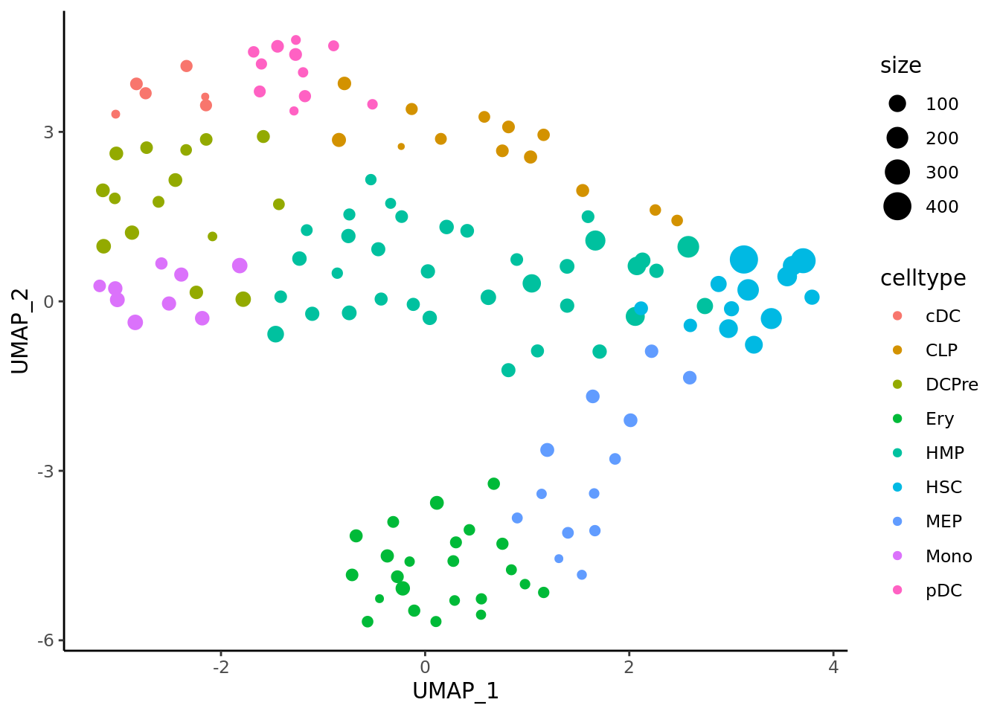
lapply(marker.supercell.umaps,FUN = function(x){
data <- cbind(x$data,cd34.supercell$size)
colnames(data)[length(colnames(data))] <- "size"
gene <- colnames(data)[length(colnames(data))-1]
ggplot(data,aes(x= UMAP_1,y=UMAP_2,size=size,colour = .data[[gene]])) + geom_point() +
scale_color_gradientn(colors = c("lightgrey", "blue"),
guide = "colorbar") +
theme_classic() + ggtitle(gene)
} )
#> [[1]]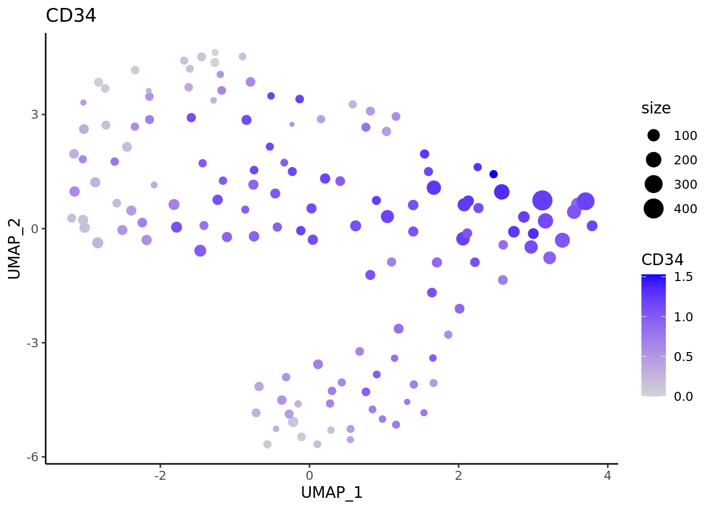
#>
#> [[2]]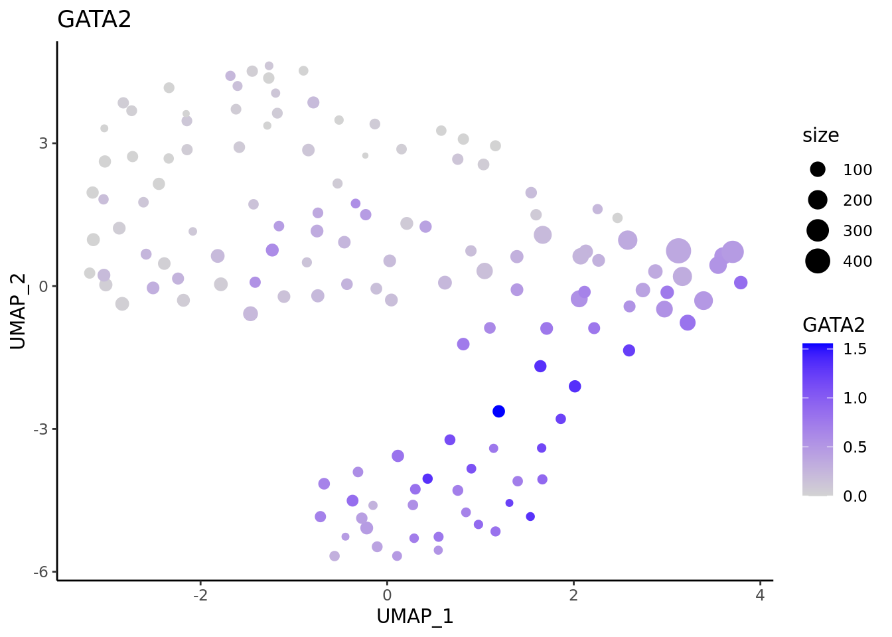
#>
#> [[3]]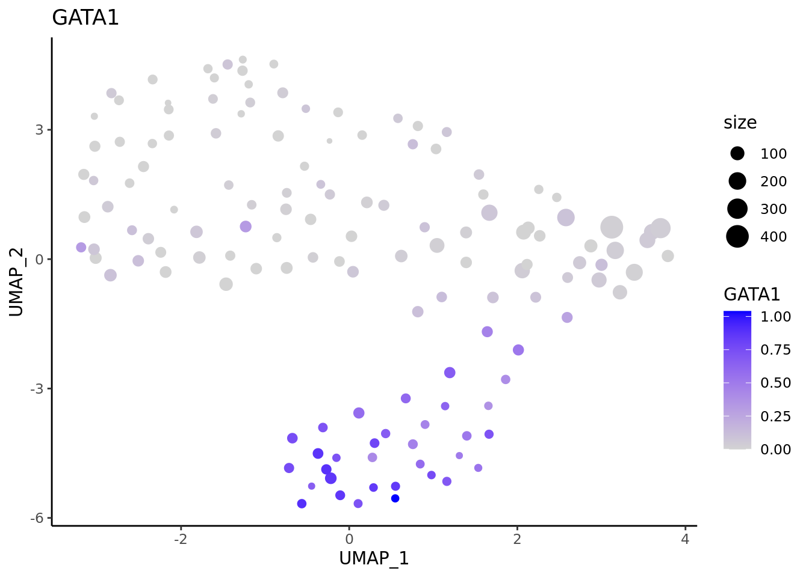
#>
#> [[4]]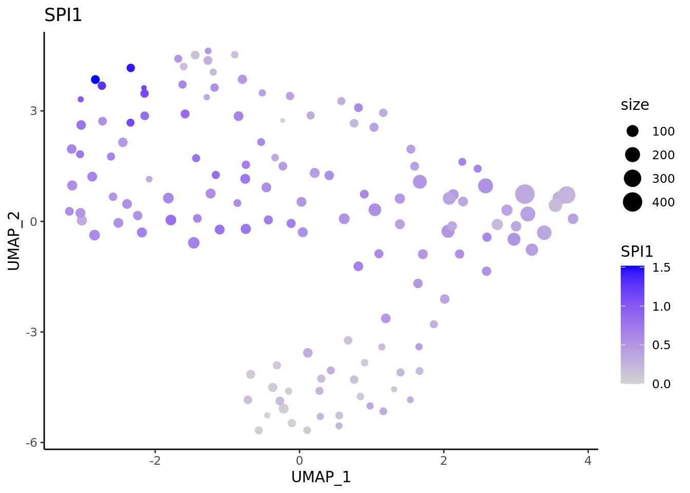